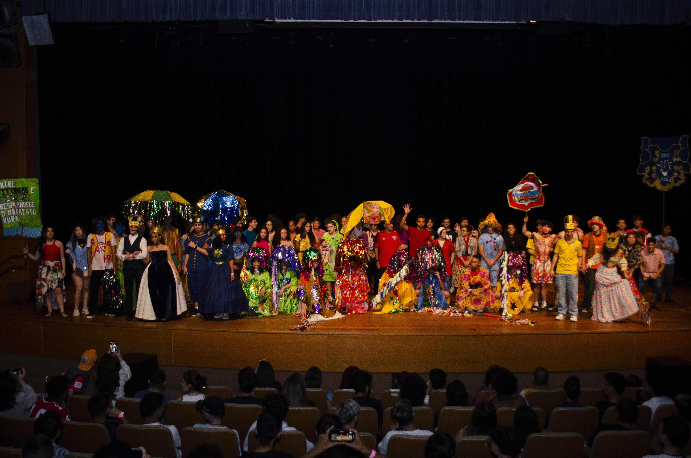
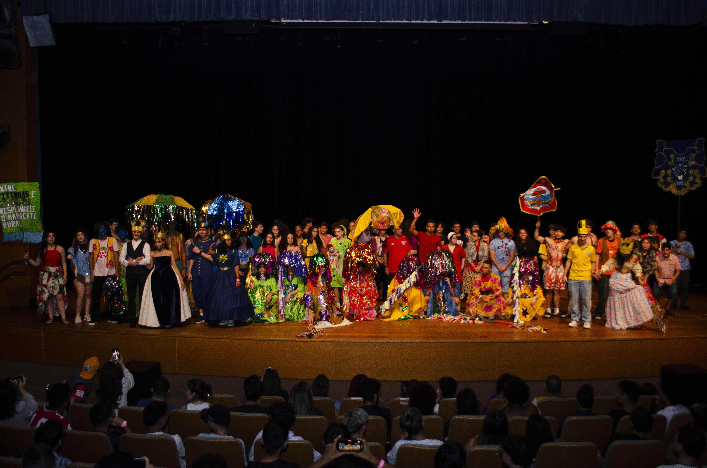

MARACATU
Na mostra de artes de 2024, as salas do 3° ano de iot apresentou o maracatu. O maracatu é uma manifestação cultural brasileira que nasceu em Pernambuco. A apresentação foi bem marcante para todos que participaram e assistiram, as salas trabalharam em equipe e com a ajuda dos professores conseguimos realizar uma apresentação muito especial.